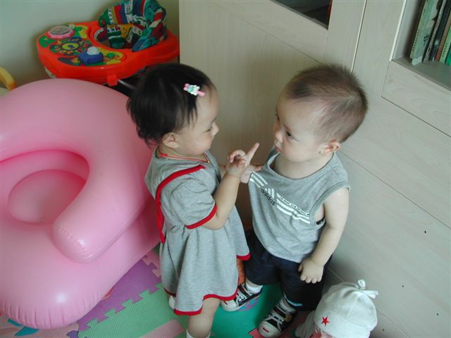
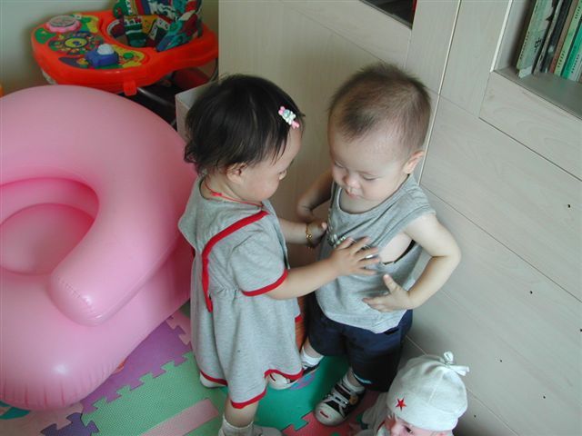
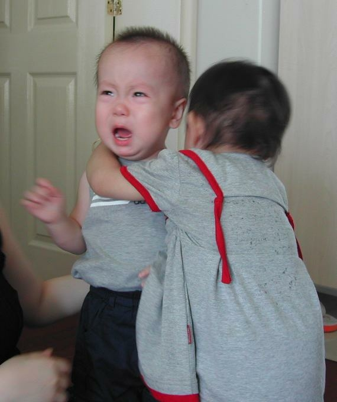
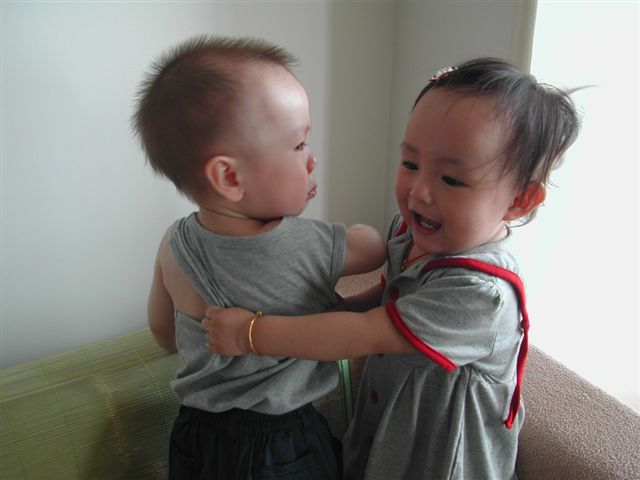
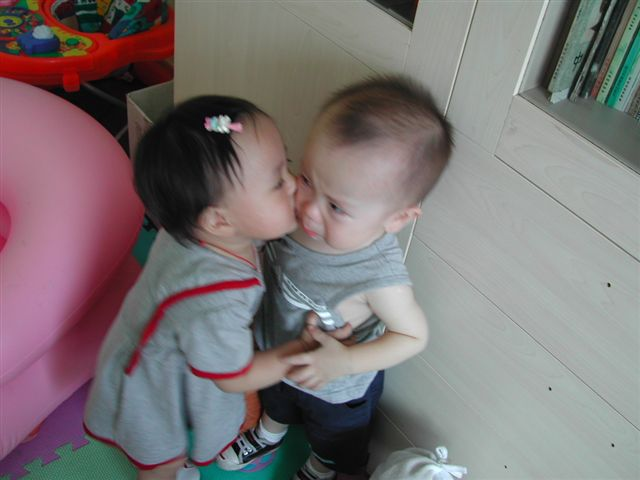

पिछले दिनों निधि जी ने अपने चिट्ठे गोरी का पति गोरिल्ला में बताया कि पत्नियों को अपने पति को इन्सान बनाने के लिये उन्हें गढ़ने और छीलने में बहुत मेहनत करनी पड़ती है” यह पढ़ कर हम भी तैश में आ गये और टिप्पणी लिख दी कि
“क्या पतियों को कम मशक्कत करनी पड़ती है? अगर हम भी विवरण लिखनें लगें तो…..!! “
निधि जी कहाँ रुकने वाली थीं उन्होने भी चुनौती दे दी कि
“जी शौक़ से लिखिये। हमने कब रोका? अपनी मेहनत का लेखा-जोखा प्रस्तुत करना चाहते हैं, अवश्य करिये। लेखिका नें नहीं कहा कि पत्नियाँ सर्व-गुण-संपन्न होती हैं।
और फ़ैसला भी अपने पक्ष में करवा लिया!! 
निधि जी की चुनौती के जवाब में तो नहीं पर निधि जी को यह बताने की कोशिश करी है की पति कितने मासूम और सीधे होते हैं, भला हो एक मित्र का जिन्होने एक मेल में कुछ चित्र भेज कर मेरी मुश्किल आसान कर दी, देखिये आप भी कितने मासूम होते हैं बेचारे पति,और……. पत्नियाँ कितनी सर्व गुण समपन्न होती हैं?
पैसा कहाँ है?

चलो….अपनी जेब बताओ!

नहीं मैं नहीं दुंगा …. बचाऽऽओ

मुझे लेने दो

आखिर मिल ही गये पैसे, अब मैं चली शोपिंग करने…….बॉय

(इस चिट्ठे पर कई कोशिश के बाद भी यह फ़ोटो उपलोड नहीं हो पा रहे थे, अत: इस के लिये निधि जी की मदद भी लेनी पड़ी….धन्यवाद निधि)